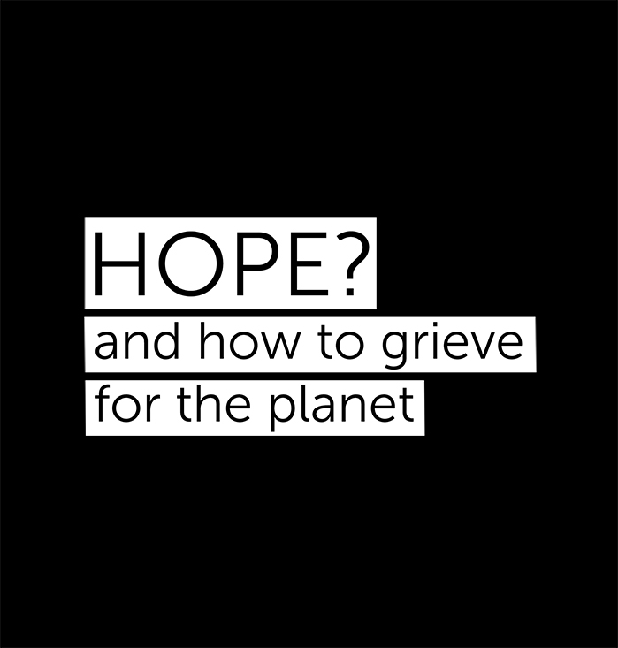

Listen to this page:
Anneli has a background in environmental science and sustainability and is a science communicator.
"Anguished"

It is immediately obvious that the state of the planet is affecting her. She is deeply empathetic and explains that this year has been a personal tipping point for her, ignited by the heatwaves in Western North America. She is very aware of what humanity is beginning to endure from climate change, and she feels this pain keenly. She tells me that the anguish she feels comes in waves and feels visceral, like a loss, like grief: “it’s really happening!” she whispers.
"Awestruck"

But she also feels in awe of mother nature – we have changed things so much that the entire planet is responding: “it’s like a sick body reacting, and it’s fascinating to see what it can do - what it can do to people”, she says.
"Passionate"

She explains that hope is not enough, but maybe passion is: “we have to have passion to turn things around. We need to make people passionate about the planet”.
She feels it is not hope that we need right now - that she cannot feel hope. “We need a force to carry on, more than hope. It needs to stem from love, from inside ourselves. I wish I could say that I feel hope, but I don’t. We need action!”

Visit the project website